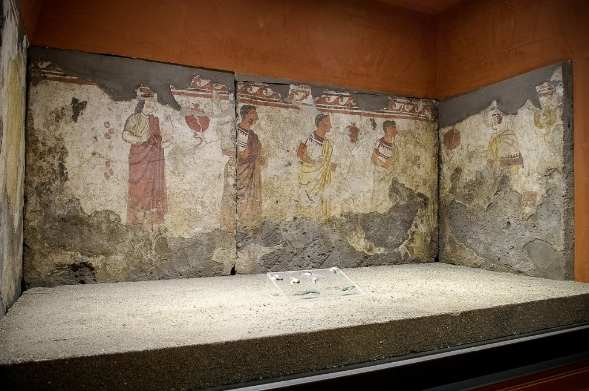

Il Museo Archeologico della Valle del Sarno, sorto nel 1975, dal 2011 ha sede nel centro storico della città di Sarno, in un palazzo gentilizio edificato verso la metà del Settecento da una nobile famiglia locale, gli Ungaro. Esso venne poi acquistato alla fine degli anni ottanta dallo stato con l’obbiettivo di allestirvi il museo. Il Museo racconta la storia della Valle del Sarno dal Neolitico al Medioevo.

Foto Ministero della Cultura (2020) - tratto dal Ministero della Cultura
Particolare del guerriero a cavallo, raffigurato su una delle lastre dipinte della tomba cosiddetta “del guerriero”, risalente alla fine del IV secolo a.C.
Torna su Sarno